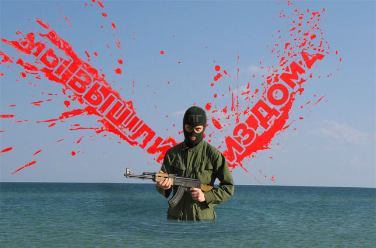

КОНЕЦ КРИТИЧЕСКОГО ДИСКУРСА

Либеральная интеллигенция величает себя «левым дискурсом» и ищет врага. Врагом оказывается ярый дугинец художник Беляев-Гинтовт, получивший премию Кандинского в номинации «проект года». Арт-критик Панов незадолго до объявления результатов уверял, что уйдет из профессии, если премию дадут фашисту Гинтовту. Интересно, уйдет ли? При входе в зал арт-центра Винзавод, где вручают премию, дугинцы колошматят троцкистов, устроивших пикет против премии. Все бьются за место под солнцем. Абстрактно-формальное искусство осталось за бортом. Конец привычного для арт-общественности мира.
Вот и ПГ объявляют лауреатами - в номинации «медиа-арт». Что делать нормальному человеку вроде нас? Участвовать в спектакле неохота. Отсиживаться дома неприлично. Ведь все уже сидят в окопе. Война так война. Мы надели армейские маски и поднялись на сцену. Многие привычно захохотали. Все же знают, что хоть и война, но шуточная. Война понарошку… Тогда мы сказали им, что в зале сидят те, кому нечем заняться. У них здесь, видите ли, «островок стабильности». А на дворе кризис. Неприятный и набивший оскомину. Незваный и нежданный. Он все еще здесь. И реально никто не знает, что будет дальше. Через каких-нибудь три-четыре месяца. Представьте, сказали, мы, что на улицы выйдут люди. Такие как мы. Люди в масках, люди без лиц. Которые сейчас возвращаются на метро и электричках в свои спальные районы. Просто задумайтесь над этим. Хотя бы на минуту. Конечно, мы понимаем, что думать тяжело. Но просто попробуйте…
Зрители в креслах привычно зааплодировали. Мы отвернулись и вышли из зала.
ПГ+редскинс